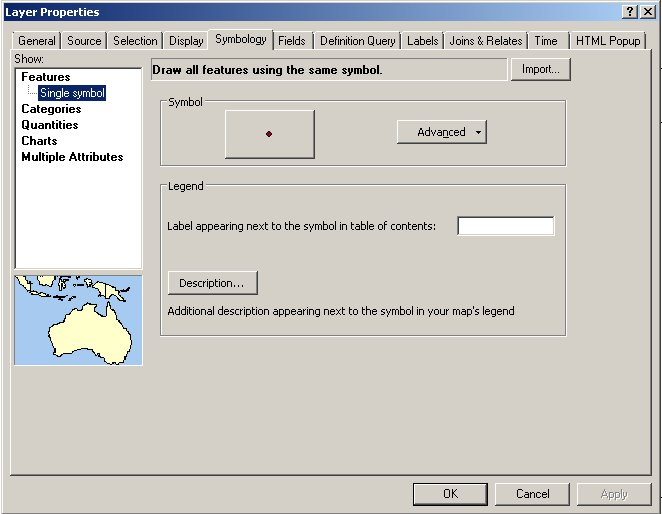

This tutorial will help you learn the basics of using GIS software. GIS stands for "geographic information systems", which is a general term for software that manages map-based data - that is, any data that has a position in two or three dimensional space. There are several GIS software packages used today, including some that are open source (and thus free of charge), but the ArcGIS package is by far the most commonly used, and the one you are most likely to encounter in the real world. ArcGIS is produced by ESRI, which stands for Environmental Systems Research Institute. ESRI has been developing their ArcGIS software in various forms since the mid- 1970's, and it has become the "industry standard", much like the Microsoft Office is for office software. For example, if you apply for a job in resource planning, environmental consulting, or some other related field, you will likely see "Experience with ArcGIS" listed as a requirement, rather than just "GIS experience", much like you may see "Experience with Excel" instead of "Experience with spreadsheets".
ArcMap is the mapping and spatial data analysis part of ESRI's ArcGIS, and is the primary component of ArcGIS that we will use in this class. We will concentrate on some of the basic the mechanics of using the software today (e.g. adding and removing files from projects, changing color schemes and labels, etc.).
The tutorial is divided into three lessons, each with its own example data set. Data files that are used by everyone for lab exercises will be kept on the "Public" network drive, which is called "Public on Viking (P:)" by Windows. You will not need to download copies of these files to use them.
As you may know, CSUSM now makes much of the software you use in classes available for use both on campus and from home through the "cougarapps" interface. When you run a program like ArcMap through cougarapps, you are actually running it on one of the university's computers in another building, and only the graphical interface is being displayed on the screen of the computer you are using. This has some advantages (such as making files on your H: drive available from home, and giving you access to an extremely expensive program for free without having to deal with student licensing issues), but we have had some trouble running ArcMap through cougarapps, including very slow operation and frequent crashes. Our computer tech support people have addressed the problems by making a "virtual" instance of Windows for each student running ArcMap, complete with space for you to temporarily store files that you create. The good news is that this has in fact solved most of our problems, but the bad news is that running ArcMap will be a little more complicated than running other programs through cougarapps.
So, when you select the "Start" menu in Windows, and start "ArcMap", you will get an entire Windows desktop in a window inside of your current Windows desktop. You will then need to use the Start menu in this new desktop window to start ArcMap - if you don't see it right away, type "Arcmap" in the search bar of the Start menu, and select it from the list.
Initially, ArcMap prompts you with a window that looks like this:
The various page sizes refer to standard sizes of printed maps. We won't be doing much printing of hard copies for quite awhile, so we don't need to select a page size - click "Cancel". The ArcMap window will look like this:
The parts of the window labeled on the image above are:
Menu bar: the menu system.
Toolbars: tools that are frequently used are displayed. Toolbars can be re-arranged by clicking, holding, and dragging them by the vertical dots on the left side of each toolbar - they can be detached and become free-floating windows, and they can be "docked" by dragging them to a side of the ArcMap window and dropped there. By default, you will see the standard toolbar, and the tools toolbar. Additional toolbars are available through the "Customize" menu, but we'll stick with the default toolbars for now.
Table of contents: the area where all of the map layers currently being displayed will be listed (currently blank). The table of contents is the place that you will interact with the map layers to change their settings on the map - for example, you can set the plot symbols, colors, and other display characteristics for a map layer via its listing in the table of contents.
Data Frame: the data frame is the workspace you are using. When you start ArcMap you will be given an empty workspace, indicated by the "Layers" label in the left-hand panel of the ArcMap window. You can add additional data frames to the table of contents with different settings so that you can display different maps, with different settings. When you add map layers to ArcMap for display, they will be placed into the Table of Contents underneath the data frame.
Position of pointer: As you move your pointer around the map display window, you'll see that the numbers shown at the bottom right side of the window change to indicate the position of the pointer. Currently, we don't have any map data loaded, so ArcMap doesn't know what coordinates to use to indicate position, so the position display is showing an arbitrary coordinate system with "Unknown Units" to indicate position. As soon as a map layer is added to the map, this display will start to use the units of the map layer to indicate position.
In principle, everything you need to know to complete your assignments will be in these online instructions. However, ArcMap also provides help in various ways that you can take advantage of.
Tool tips: Much of the graphical interface for ArcMap is made up of buttons. Once you know what the buttons are for you'll find this convenient, but until then you will spend a lot of time hunting for the right one. To help you find the right button, the name of each button is revealed if you hover your pointer over the button for a few seconds, like this:
More extensive help is available through the Help menu. The ArcGIS Desktop
Help menu option starts the ArgGIS help system, which can be searched and
browsed for help on the topic you want.
Now, add a map layer to the view. Click on the "Add data" button (shown above). When you do this, the "find file" dialog will pop up, but the location of our files is not yet identified, like this:
An odd feature of ArcGIS software is that it doesn't automatically present the entire file system that's available in Windows, such as the P: drive (P: is a "public" network drive that professors can use to post files for use in classes - it's like the H: drive, except that students can only read files from it, but can't write to it). We have to "connect" the P: drive where the data for this tutorial are held. Click on the "connect to folder" icon (upper middle of the dialog, with a yellow right-pointing arrow, underlined in red in this picture), which will open up the Connect to Folder window. Within the Connect to Folder window, open up "Computer", open up "Public on Viking (P:)" and then navigate down to "Biology → kristanw → biol533", like so:
Click on the biol533 folder once to select it, and then click "OK". This will put you back in the "Add Data" window, open to P:\Biology\kristanw\biol533, like this:
You can now go find the files you need - go to "lab1_data" → "lesson01", and add the file "30x30.shp" to your map. The 30x30.shp shape file contains a 30° grid of the surface of the earth that will be used as the background for your map. When you first display it, it will look like this:
The coordinates that make up the grid are degrees latitude (which run
from the equator north and south) and degrees longitude (which run through
Greenwich, England, and run east and west).
STOP! GO NO FURTHER UNTIL YOU SAVE YOUR WORK!
ArcMap is not known for its rock-solid stability, and running it through Cougar Apps adds network issues to the list of things that can cause it to crash. Get into the habit of saving your work frequently. Unfortunately, there is some complexity you need to be aware of to back up your work properly.
The environment you're working in
First, recall that when you start up ArcMap, a virtual Windows desktop is started, with its own virtual C: drive. A single computer over in IITS is running all of the virtual desktops for everyone in class, with a different virtual C: drive for each user. The environment is created on the fly when you launch ArcMAP, and it will go away when you log out of the virtual Windows desktop.
We need to run this way to avoid ArcMap crashes. But, it means that when you save files, you need to be clear about what you're doing.
- If you save a file from within the Windows virtual desktop environment (the one running ArcMap), C: will pertain to the virtual drive that will vanish when you log off.
- If you are outside of the virtual desktop, in the Windows desktop for the computer at which you are working, then C: pertains to the hard drive in the computer. It's a physical drive, and it's still there if you log off and log back in.
- All of the other drive letters (H:, P:, S:) are the same in either the virtual Windows environment, or the desktop of the computer you're working on.
To make things work as well as possible, you will need to save files into the C: drive of the virtual environment. But, since it vanishes when you log off, you will need to then back these files up to your S: drive before you log out! If you don't you will lose your work.
ArcGIS map files and data layers
The next bit of complexity is that you need to understand what the various GIS files are. First, understand that there is a difference between map files and data layers.
Map file - a file that records the state of the ArcMap environment you are working in. This includes the toolbars you are using and how they are arranged, the data layers in the table of contents and all of their settings (plot symbol, color, etc.). Saving this file allows you to start again at the place you left off.
Data layers - the GIS data, which you load into the Table of Contents. These include shapefiles (like 30x30.shp), and other kinds of map data and tables that ArcMap is able to work with.
Bear in mind that saving a map file does not save the data layers! The map file only has pointers to where the files are stored, but the map data is not actually saved within the map file. Because of this, if you were to take the map file to a different computer and open it up on a computer that doesn't have access to the P: drive it would not be able to find the 30x30.shp file, and would display an error in your Table of Contents.
But, as long as we are using the map file in an environment that can access the 30x30.shp data layer on the P: drive, saving the map file helps us. To save the map file to the virtual C: drive, do the following:
- Click on the "Save" icon (the little floppy disk, if you remember those, or select "File" → "Save" from the menu.
- Navigate to Computer → Local Disk (C:) → Users → {folder with your user name}, and then create a new folder called Biol533, and another within it called Lab1. Save your map file within this new Lab1 folder, and call it "lab1_map" - this will create a file called lab1_map.mxd. Your map file, lab1_map.mxd, is now saved to the virtual C: drive.
You will need to back up this map file to your S: drive before you log off so it doesn't disappear when the virtual C: drive disappears, but for now your work is saved.
ArcGIS shape files
There are many different types of GIS data files, of which we will only work with a few. Any time we are working with vector data (that is, maps that are made up of points, lines, or polygons), we will be working with shape files. The name "shape file" is a little confusing, because it gives the impression that it is a single file on disk. ArcGIS reinforces this impression by only showing you a single file when you are adding data layers to the table of contents - for example, when you added 30x30.shp you only saw a single file named 30x30, with a .shp filename extension. This gives the impression that the shape file is a single file with a .shp extension.
In fact, every "shape file" is actually made up of several different files that all have the same file name, but with different file extensions. ArcMap hides this complexity from us, and only shows us the .shp file for the data layers. For those of you that are from the Mac world and are unfamiliar with the concept of filename extensions, Windows files have a name (just like Mac files do), followed by a period (or a "dot"), followed by a filename extension that indicates the type of file. When you double-click on the file, Windows uses the filename extension to decide what kind of file it is, and uses a table it keeps of default programs to use for files with various filename extensions to open the file. Macs don't use filename extensions, they use information that's written into the file itself to identify the file type instead. In both operating systems, two files can't have the same name within the same folder, but in Windows having different filename extensions is enough to consider the names different. So, ArcGIS is able to keep track of which collection of files are part of a "shape file" by using the same file name, but with different extensions for all of the component files.
To see what the 30x30 shapefile really looks like, start up Windows Explorer, , and navigate to "Public on Viking (P:)" → "Biology" → "kristan2" → "biol533" → "lab1_data" → "lesson01". You'll see that there are actually several files with the same name of 30x30, but with different file name extensions. They are:
- 30x30.dbf - the attribute table, which is a table of properties (called attributes by ArcGIS) for each of the geometric shapes in the file. Note that Windows by default hides the filename extensions for files it knows already. The first file seems not to have any extension, but if you look at the "Type" column you'll see that Windows thinks this is an "OpenOffice.org 1...." file. This is because dbf is an old format that was developed long ago for the DBase database program (the program is dead, but the database file format lives on). The OpenOffice.org software is set as the default software for opening dbf database files, so Windows thinks the 30x30.dbf file is an OpenOffice.org file. If you want to actually see the .dbf extension, you can select "Organize" → "Folder and search options", then switch to the "View" tab, and un-check "Hide extensions for known file types". You will then see that the first file is indeed called 30x30.dbf
- 30x30.prj - contains information about the map projection. Map projections are mathematical transformations used to display the curved surface of the earth on a flat computer monitor.
- 30x30.shp - contains the actual coordinates that make up the lines in the grid. Shape files are made up of features, which are individual geometric shapes used to draw the map. This shape file is a set of polygons with latitude and longitude lines defining the edges of the polygons - thus, each square on the map is a feature. You may also see a "LOCK File" type with the same name plus a bunch of random characters - lock files are used to let other programs know that a file is already open, and that no changes can be made (having two different programs changing the same file at once in incompatible ways is a bad thing).
- 30x30.shx - contains an index of all the objects in the .shp file, which ArcMap uses to speed up its operations.
All of these files together make up the 30x30 shape file, and all are needed for ArcMap to display the grid properly. If any are missing the data layer may not be usable.
You can close the Windows Explorer window and switch back to ArcMap.
Okay, back to ArcMap.
Notice that once you added 30x30.shp, the position of the mouse is now being displayed in the lower right corner of the map display window in "decimal degrees" instead of "Unknown units". Decimal degrees are latitude and longitude coordinates expressed as decimal numbers, with degrees as the whole units, and minutes and seconds translated into decimals. Note that this change happened automatically - ArcMap sets the units for the data frame by reading this information from the projection file (the one with the .prj extension) from the first layer added.
Add countries and cities to the map: Now, use the Add Data button to add the country and city layers from P:. You should see something that looks like this:
The countries and cities files were plotted together in the right locations because they also have .prj files that ArcMap used to determine the coordinates for the features in the data files. Note that the files don't all have to have the same units to be properly overlaid - as long as each shape file has a .prj file, ArcMap can do the necessary transformations "one the fly" to make the maps overlay properly.
|
Right now the data frame is displaying latitude and longitude coordinates as though they were a simple, rectangular Cartesian coordinate system, but this is a poor way to display a map of the world. You can see the dotted longitude line at 0° in the map on the right. Additional longitude lines are shown every 15 degrees, increasing in number to the east until they reach 180°. Longitudes to the west of the prime meridian are negative, and they increase in absolute value moving west; 180° and -180° are the same line. From these maps you can see that latitudes are parallel with one another, but longitudes converge at the north and south poles. Displaying longitudes as rectangular coordinates that are parallel with one another badly distorts the size and shape of land masses away from the equator. This distortion results in Greenland looking larger than Australia. |
To get a more reasonable depiction of the surface of the earth, we need to use a projection that does a better job of representing the curves surface of the globe on a flat computer screen. We will learn much more about projections in a later lab, but for this lab we will just use a projection that is considered among the best for making maps of the entire earth, the Robinson projection. Since all we want to do is change the way the data are being displayed, we need to set the projection for the data frame, rather than setting it for the shape files themselves.
Changing the projection of a data frame: To change the projection being used for display, you just need to change the projection for the data frame in which you are currently displaying the maps. You can access the data frame's properties by right-clicking on the "Layers" label in the table of contents, then selecting "Properties" from the menu that pops up (the last entry in the list). The "Coordinate System" tab is where the current projection for the data frame is displayed, and where we can change it to something else:
Currently, the coordinate system is listed as "GCS_WGS_1984". The GCS part is short for a "Geographic Coordinate System" (meaning that it is displaying coordinates as latitude and longitude), based on the World Geodetic System of 1984. You will learn more about what this means later, but for now the interpretation is simply that the data frame is displaying the latitude/longitude coordinates as though they were x,y units without any projection.
To change the display to the Robinson projection we just need to find it in the folders displayed above and select it:
Your map should now look like this:
The Robinson projection keeps the latitude lines parallel and equally spaced apart, but allows the longitude lines to converge somewhat towards the poles. You'll see that even though the appearance of the map has changed, ArcMap still knows the latitude and longitude of the pointer on the screen - if you position over the equator (the horizontal line in the middle of the globe) it will show 0 degrees latitude, and as you approach the poles it will approach 90 (to the north) or -90 (to the south) degrees latitude. If you follow a longitude line the longitude displayed shouldn't change, even if you follow one of the strongly curved lines at the edges of the map.
Change the plot symbols: We can make the map more informative by using different plot symbols for different kinds of cities, using information from the cities attribute table, which is the .dbf file for the cities shape file (that is, it is cities.dbf). "Attributes" are ArcGIS's word for "variable", so attribute tables are just data tables made up of variables measured for each of the features in the map, along with some additional attributes that ArcMap uses internally to link the data in the table to the features in the map. Any attribute in the table can be used to set the plot symbol used for features.
To see what ArcMap knows about the cities, right-click on "cities", and select "Open attribute table". A data table will open up that has the columns FID, Shape, AREA, PERIMETER, CITIES_, CITIES_ID, NAME, COUNTRY, POPULATION, and CAPITAL. You'll see that each row in the table pertains to a single feature in the shape file - the features are the points, and each point is a different city. The CAPITAL column has values Y (if the city is a capital), and N (if the city is not a capital) - if we wanted to have ArcMap use a different symbol for capital cities, we just need to tell it to use CAPITAL as the basis for picking a plot symbol.
Close the attribute table (click the x in the upper right corner), and double-click the "cities" layer in the Table of Contents. This brings up the "Layer Properties" window - select the "Symbology" tab:

Currently, every city is getting the same plot symbol. To change this, click on the "Categories" option from the "Show" list on the left, and then the "Unique Values" option below it:
Change the "Value Field" from "AREA" to "CAPITAL", and then click "Add All Values":
When you click "Add All Values", ArcMap scans the entries in CAPITAL, and identifies all of the unique values. In this case, the only entries are "Y" when a city is a national capital, and "N" when it is not. You can see that you're given a count of how many times each category appears in the file, and there are 164 capitals out of 606 cities in the layer.
The plot symbols selected automatically are not very distinct, so to select better ones by double clicking on the one for the Y row in the table of contents, scroll down and select Star 3 as its plot symbol, and change its color to red:
Click OK, then OK again to apply the change. Your map should look like this:
You can add some information about the countries as well. The attribute table has lots of information in it, and we could use any of the columns to color the countries on the map. We'll use the per-capita gross national product, which is a measure of wealth. Double-click on "country" and choose the "Quantities" from the "Show" list, and then select the "Graduated colors" option. Choose "Gnp_cap" as the "Value" field, which will display gross national product data for each country as variation in color. Instead of giving a different color for every unique GNP (which would probably give us a different color for every country), ArcMap breaks up the GNP numbers into bins and assigns a color from the color ramp selected to each bin:
Click "OK" to apply the changes.
You can also change the display of the layer name in the table of contents. Double-click the "Cities" file, and in the "General" tab change the layer name to "Cities of the world". Note that this does not change the name of the file, just the name used in the table of contents. You can also change the names displayed for the plot symbols - if you double-click on Y and select the Symbology tab, you can change the "Label" for Y to "Capitals", and N to "Other".
Now that you're getting the idea of how to alter plot symbols, try changing the color of the 30x30 file to a blue color, to indicate oceans (keep it as a single symbol, and just change the fill color).
When you're done, your map will look like:
Save your work!
We will take a quick look at another type of data commonly used in GIS,
an aerial photo.
For this lesson we will be working with a much smaller area, and it doesn't make sense to work in the same map as the world map you used for Lesson 1. You can add a new data frame for this smaller area by selecting "Insert → Data Frame" from the menu bar. You will get a new data frame called (creatively) "New Data Frame", with nothing in it. Your map display will thus go blank, but you haven't lost anything - if you right-click on "Layers" and select "Activate" your "Layers" data frame will be turned back on, and your world map will be displayed again.
Right-click and "Activate" your "New Data Frame". Then, click on the "add data" button as before, and navigate to the Lesson02 folder. Select the file "airphoto.bil", and click "OK".
This is a gray scale aerial photo of an urban scene. The air photo is an example of raster data, made up of a rectangular array of cells (called pixels), each of which has a single value assigned to it. Images are a type of raster data that store numbers indicating intensity of light reflected off the surface within each pixel. In a grayscale image like this one, each pixel has a number from 0 to 255 indicating intensity of light reflecting off the surface, and displayed on the screen as a shade of gray.
Now, in spite of the fact that all the computer knows about this image is the value from 0 to 255 for each pixel, you can presumably see that there are buildings, roads, trees, and other features on the ground. Humans are good at interpreting features in an image, but to make that information known to the computer it's necessary to make data layers that indicate the features we see in the image.
Fortunately this interpretation has been done for us. Add the other files that are in the directory and see how they overlay the image (NOTE: you can select more than one at a time to add by CTRL+clicking on the names of the files until all are selected). Notice that each file is named for the type of feature that it maps - you now have a layer each for:
In general, GIS data is constructed as "thematic" layers, meaning that each layer only represents a single kind of feature. For example, both the waterline and sewerline layers are shape files geometrically represented with lines, but we aren't mixing them together into a single layer. We may want to know whether waterlines and sewerlines tend to parallel each other, but we can do that by adding both layers to the map and observing them both at once.
The bldgs, sewars, waterln, and lights files are examples of vector data, because they are made up of geometric shapes. Vector data can be made up of polygons (like the buildings), lines (like the water and sewer lines), or points (like the lights). We'll learn more about raster and vector data in the next lab.
Notice that one of the problems with displaying more than one layer at a time, and overlaying them with an image, is that they can block each other. The order that the layers are drawn is the order they appear in the Table of Contents, and you can change the order they are drawn by dragging them into a different order. Try dragging airphoto.bil into the first position, just under "New Data Frame" - you'll see that when it's on top the image blocks all of the other layers. Drag it back to the bottom so you can see the other layers again.
Currently, the filled polygons of the bldgs polygon layer are blocking the image. If you want to see what the buildings look like on the image, you can turn off the "bldgs polygon" layer by un-checking its box.
Alternatively, you can leave the buildings turned on (check the box), but use an un-filled polygon to represent them, so that you can see through the polygon to the image behind it.
For the final exercise, we will make more use of the information in the attribute table of a data layer, and will get some practice moving around the map.
The data layers we will work with are of the greater Atlanta, GA area. Insert a new data frame for this new geographic area.
Panning and zooming: Add the "cities.shp" file from the lesson03 directory. You will also need to add interstate highways ("inter.shp") and counties ("counties.shp").
ArcMap decides the area to display in the map window based on the first layer you added. It sets the extent of the map (i.e. the north, south, east, and west edges of the display) and the scale (i.e. the zoom level) so that the layer will fill the screen with a little bit of empty space on each side. Tools that we commonly use to change the extent and scale are here:
Zooming refers to changing the scale. The scale of the map is shown in a drop-down box next to the "add data" button. Map scales are expressed as ratios of units on the map to units in the real world - so, a scale of 1:500,000 would mean that 1 unit on the map is equal to 500,000 of the same units in the real world. If you measured a distance of 1 cm between two cities on the map, that would be equal to 500,000 cm (or 5 km) in the real world.
To zoom in, click on the "zoom in" tool and drag a box on the screen that you want to zoom to - that is, left-click on one corner of the area you want to see, hold down the left mouse button, move the cursor to the opposite corner of the area you want to see, and release the left mouse button. You'll see that the area you dragged the box around is not magnified and centered on the screen. The scale will have changed too - since you're looking at a smaller area, one unit on the screen is now representing a smaller distance in the real world, maybe something like 1:100,000.
To zoom out, you can click on the "zoom out" tool, and click once in the middle of the map - you'll see that you zoom out with the display centered where you clicked. If you click on an edge of the map with the zoom out tool you will zoom out and re-center on that edge.
FYI, you can also zoom in and out using the mouse wheel - scrolling the wheel towards you zooms in, and away from you zooms out. Bear in mind, though, that using the scroll wheel with big maps can cause the software to bog down - as the wheel scrolls it issues a zoom in or out command repeatedly in rapid succession, and ArcMap can have a hard time keeping up. Using the zoom in and zoom out tools prevents this problem. Try not to get into the habit of using the scroll wheel, it will give you heartburn later.
To change the extent without changing the zoom level use the "pan" tool. Select it, and left-click and drag the map to change the extent.
To zoom out so that every layer in the map is fully displayed, click on the "Zoom to full extent" button - you should see all of the map layers, with a small amount of white space all around the edges.
Zooming to a layer extent: Zooming to the full extent took us further out than where we started, because the counties layer covers a larger area than the cities layer did. If we just want to zoom out far enough to see all the cities, we can zoom to the extent of the cities layer instead of to the full extent. Right-click on the "cities" layer, and select "Zoom to layer" - this will take you back to the zoom level you started with.
Labeling features: We will now add labels to the cities. Select the "cities" data layer, right-click, and select "Label Features".
ArcMap will select a column to use for labels automatically, and in this case it finds the right one. But, you will often want to assign labels other than the ones selected by default; for that, open up the properties for the cities layer, and select the "Labels" tab. The "Text String" section is where the column that contains the labels is identified, and we're using "CITY_NAME" currently. You can also change the font, size, color, and other attributes of the labels in the "Text Symbol" area. The "Pre-defined" button will take you to a set of common text styles that work well in maps for various types of features, which you can use.
Querying attributes: Another way to move around the map is to find attributes of interest, and then zoom to their location. We can do this by querying the attribute table to find the features we want, and then zoom to them.
Open the attribute table, click the "Options" button (left-most on the button bar of the attribute table), and select the "Select By Attributes" menu item:
A window will pop up that will help you build a query to select the cities you want (of course, there are so few cities in this file that it's not really necessary to query the table, but the same procedure will work for large files as well). Find "CITY_NAME" from the list of column names, and double-click on it. It should now appear in the space below, like this:
To generate a list of the cities that appear in the file, click on "Get Unique Values" - the city names should now appear in the box above this button. We want to select Atlanta and Decatur, which means we have to build our query with two parts, one for each city. First we will choose "Atlanta." Click on the "=" button in the block of mathematical operators in the middle of the query window, and then double-click on "Atlanta" from the list of cities. Since we want both cities, we want any record in the table that has Atlanta or that has Decatur; click the "or" button, then double-click [City_name] = "Decatur." Your query should look like this:
Finally, click "Apply". You should see two rows highlighted in your table,
one for each city. Close the table and you will also see them highlighted
on the map (closing the table does not clear the selection). To zoom in so
that these two cities fill the screen, right-click on the "cities" layer,
and select "Selection → Zoom to selected features". You should see
something like this:
The color contrast isn't great, but you can see the two cities in a light
blue on the right and left sides of the map.
We can also search for portions of attributes. If we wanted to find all the cities that have "ville" as part of their names, we would use the "Like" operator, along with a "wildcard" character that the computer interprets as "Any characters can appear here". Start up the select by attribute window again, but this time build the expression:
"CITY_NAME" LIKE '%ville%'
and click "Apply". You'll see that you have Lawrenceville and Douglasville selected. The "Like" operator means that only part of the city name has to match the criteria, and the wildcards say that any characters can occur before or after ville, as long as ville occurs someplace in the name. The percent operator means "any number of characters can occur here".
Zoom to selected features for these two "villes". Again, you'll see the two selected cities at the right and left edges of the map.
ArcMap keeps track of the extents and scales that you've used, and allows you to scroll backward and forward through them. You can go back to the zoom level from the previous map by clicking the "Go back to previous extent" button, which is the left-pointing blue arrow, . After you use the "Go back to previous extent" button the "Go to next extent" button becomes active (the right-pointing blue arrow), and you can use it to return to the map zoomed to the "villes".
Today's assignment is to complete the tutorial, so all you need to do is to show me the completed file before you leave.
All you need to back up for today is your map file. To do this:
Even though you are only backing up your map file, and not the data layers, all the data layers are safe and sound on P:. You will only need to worry about backing up data layers once you start making new ones of your own.